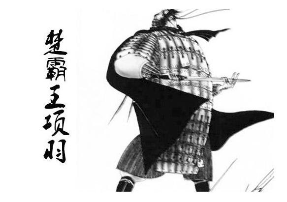

项王故里
项羽 （公元前232年―公元前202年），项氏，名籍，字羽，楚国下相（今江苏宿迁）人，楚国名将项燕之孙，军事家， 中国军事思想“兵形势”（兵家四势：兵形势、兵权谋、兵阴阳、兵技巧） 的代表人物，也是以个人武力出众而闻名的武将。 李晚芳对其有“羽之神勇，千古无二”的评价。司马迁在《史记》中写到：项氏世世为楚将，封于项，故姓项氏。
项羽早年跟随叔父项梁在吴中（今江苏苏州）起义反秦，项梁阵亡后他率军渡河救赵王歇，于巨鹿之战击破章邯、王离领导的秦军主力。 秦亡后称西楚霸王，定都彭城（今江苏徐州），实行分封制，封灭秦功臣及六国贵族为王。而后汉王刘邦从汉中出兵进攻项羽， 项羽与其展开了历时四年的楚汉战争，期间虽然屡屡大破刘邦，但项羽始终无法有固定的后方补给，粮草殆尽，又猜疑亚父范增， 最后反被刘邦所灭。公元前202年，项羽兵败垓下（今安徽灵璧县南），突围至乌江（今安徽和县乌江镇）边自刎而死。